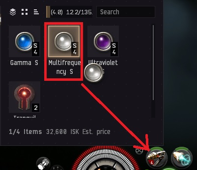
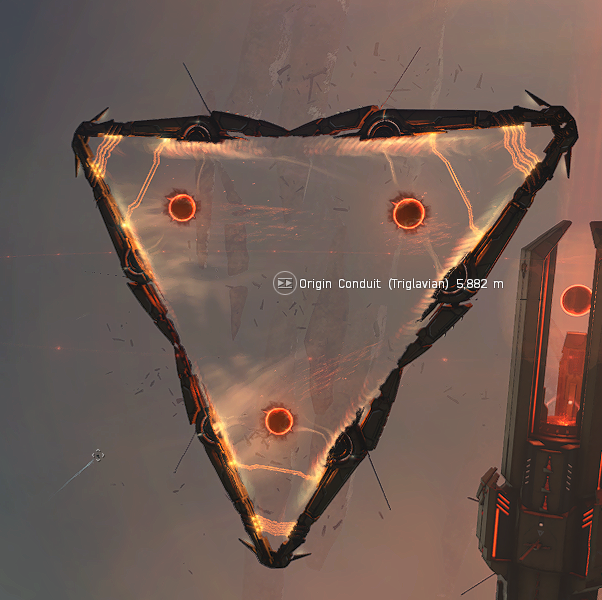

Step 1: Get ship
Dock in Sigga - Garden of Thorns and check corporation contracts for: Punisher
This is fully fitted ship with 5 filaments.
Step 2: Prepare for abyss
1.Group your weapons:
1.Right click on Microwarpdrive and select "Set Auto-Repeat Off":
1.Load Multifrequency ammo by dragging and dropping it:

1.Get to the safe space and double click on the Tranquil Electrical Filament and click on "Activate for fleet"
There is 20minutes time limit for the abyss. Abyss has 3 rooms so you should do each room under 6 minutes. Please read all 4 steps below to succesfull complete T0 Abyss.
Step 3: Run abyss
1. Everytime you enter room, select 1 enemy and press Keep at distance 1km.
2. If enemy is more than 6km far away, activate microwarpdrive for 1 cycle to get closer, otherwise you will miss
3. Have 1 armor repairer turned on at all times. If your armor drops under 50%, turn on the other repairer
4. Once enemy is destroyed, destroy Biocombinative Cache Wreck, loot it and proceed to Origin Conduit to jump to another room.

Tips
1. Ignore your shield as this Punisher is armor based fit that can easily repair itself.